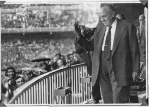
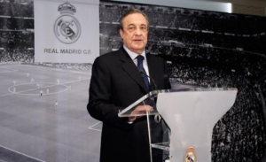

El Real Madrid fue fundado en 1902. Julián Palacios es el primer presidente, pero fue Juan Padrós, catalán y de Barcelona, quien formalmente constituyó la institución ese año. El interés en el fútbol crecía tanto en España que el Madrid propuso realizar un torneo en honor al rey Alfonso XIII. La iniciativa se convirtió en la Copa de España (Copa del Rey).
Con un creciente número de socios, el club vio la necesidad de cambiar los terrenos donde jugaba para aumentar el número de espectadores y poder recaudar más dinero. Se desplazó al estadio de O’Donell. Y fue entonces, en 1920, cuando el Rey de España concedió el título de Real al club.
Al inicio de los años 20, el Real Madrid volvió a su rol pionero en el fútbol español. El equipo hizo una serie de viajes fuera de España, con enorme éxito internacional. El Real Madrid es uno de los fundadores del Campeonato Nacional de Liga, en 1928, y jamás ha descendido a Segunda División.

El Real Madrid había aceptado el hecho de que el éxito que buscaba solo podía ser podía ser posible con los mejores jugadores. El portero Zamora y los defensas Ciriaco y Quincoces fueron fichados. El trío formaba la mejor defensa del mundo. La temporada 1931-32 fue histórica para el equipo entrenado por Lippo Hertza. Los merengues terminaron sin liga sin perder un solo partido. Fue el inicio de una era de dominancia del Real Madrid durante la II República: 2 ligas y 2 Copas en 4 años.
Solo un mes tras la victoria en la Copa de la República en 1936, estalló la Guerra Civil. El momento de gloria fue amenazado primero y destruido después por el conflicto militar. Muchos jugadores terminaron sus carreras o dejaron el país para marchar al exilio. El equipo no se recuperaría hasta mucho después de la guerra. El presidente del Real Madrid cuando empezó la el conflicto, Sánchez Guerra, fue exiliado, y un presidente interino, Antonio Ortega, fue ejecutado por el régimen franquista tras la Guerra Civil. Debido a la guerra en Madrid, el club intentó disputar la Liga Catalana Republicana ajena al conflicto, gracias en parte al entrenador catalán del club, Francisco Brau. Pero pese al apoyo del sindicato de jugadores y de todos los demás clubes catalanes, el F.C. Barcelona vetó su participación.
La Guerra Civil y la posguerra fueron durante más de una década una tragedia absoluta para el equipo. El Real Madrid no ganaría ninguna liga entre 1933 y 1954, su peor racha de su historia; y solamente 2 Copas, en 1946 y 1947. También estuvo en dos ocasiones al borde de descender a Segunda División. El rival local, el Atlético, era apoyado por el ejército que había ganado el conflicto. Por su parte, como club que había apoyado la República, no generaba simpatías en el régimen de Francisco Franco y durante los 15 primeros años del franquismo el club se encontró en la posición más débil de su historia.
En 1943, en las semifinales de Copa, el Real Madrid se enfrentó al F.C. Barcelona. En Les Corts, los azulgranas ganaron 3-0. En la vuelta, el Madrid eliminó a su rival con una remontada histórica. 11-0, y una rivalidad que ya existía se convirtió en eterna.
El 15 de diciembre de 1943 Santiago Bernabéu se convirtió en el presidente del club. Antiguo jugador y entrenador, se convirtió en el hombre más importante de la historia del Real Madrid.
Los periodistas franceses Gabriel Hanot y Jacques Ferrán soñaban con una competición que reuniera a los campeones de cada país europeo. Entre ellos hicieron una serie de normas que alcanzaron los cuarteles de la Union of European Football Associations (UEFA). La propuesta gustó mucho a los responsables del periódico francés L’Equipe, que se comprometió junto a la UEFA a organizar el torneo. Nombraron una comisión que incluyó a Santiago Bernabéu como uno de los vicepresidentes. El campeonato se convirtió en una realidad en 1956: había nacido la Copa de Europa.
El Real Madrid consiguió su primera Copa de Europa el 13 de junio de ese año. Sería la primera de cinco copas consecutivas que ganaría. Esta inigualable hazaña fue conseguida en parte gracias a uno de los más grandes futbolista de la historia, Alfredo Di Stéfano, bajo la presidencia de Santiago Bernabéu.
El Madrid descubrió a Di Stéfano en el 50 aniversario del club, en 1952, cuando el equipo se enfrentó al Millonarios. Desde entonces el club se fijó en él y finalmente logró ficharle. Se convirtió en el mejor jugador de la historia del Real Madrid siendo el líder del equipo que ganaría 5 Copas de Europa consecutivas, 8 ligas y se convertiría en la mayor dinastía de la historia del fútbol.
Ningún otro club ha logrado igualar sus hazañas. El equipo estaba compuesto de leyendas, aparte del argentino Alfredo di Stéfano, como el húngaro Ferenc Puskas, el francés Raymond Kopa o el español Francisco Gento, actual Presidente de honor del club y que tiene el récord único en el mundo de campeón de 6 Copas de Europa.
En la temporada 1959-1960, el exjugador del club Miguel Muñoz se convirtió en entrenador. Ganó la quinta Copa de Europa consecutiva en su primera campaña como jugador y convirtió en el primero en ganar el trofeo como jugador (tres veces) y como técnico. En 1960 los merengues serían coronados como los primeros campeones del mundo al ganar la primera edición de la Copa Intercontinental, venciendo 5-1 al Peñarol de Montevideo.
En los 60 el equipo se enfrentó a un período de cambios. En España dominó sin rival, ganando 8 títulos de Liga en esa década: en los 50 el club había ganado más Copas de Europa que ligas. Y además consiguió la Sexta Copa de Europa en 1966 (ese año no ganó la Liga).
El fútbol se vistió de luto cuando el 2 de junio de 1978 falleció el presidente que había llevado el Real Madrid a lo más alto. Los 70 habían sido la única década desde la creación de las competiciones europeas en la cual el Madrid no había conseguido ningún título internacional, aunque a cambio consiguió otras 6 ligas en esa década.
Los 80 fueron dominados por una generación de jóvenes jugadores. La Quinta del Buitre, lideradas por Emilio Butragueño, hizo al Real Madrid uno de los mejores equipos de la historia. Los goles de Hugo Sánchez ayudaron a coronar una década de éxitos. El club ganó 2 Copas de la UEFA con remontadas históricas en Europa y noches mágicas en el Bernabéu. El club también ganó 5 ligas seguidas, un récord en España, entre 1986 y 1990.
Real Madrid comenzaría entonces una nueva era dorada. Primero, 32 años después, volvió a ser campeón de Europa. Pero no solamente una vez: ganó 3 Ligas de Campeones en 5 años: la Séptima en 1998, la Octava en el 2000 y la Novena en 2002. El canterano Raúl y leyendas como Hierro, Roberto Carlos o Redondo acompañaron los triunfos.
En el año 2000 Florentino Pérez llegó a la presidencia y comenzó la denominada época de los Galácticos. En esos 4 primeros años se ganó 1 Champions League(la Novena Copa de Europa) 2 ligas y creó un equipo de ensueño con las mejores estrellas del mundo del fútbol: Figo, Zidane, Ronaldo, Beckham se unían a Raúl, Hierro o Casillas.
El Real Madrid ganó 2 ligas más en 2007 y 2008 bajo la dirección de Fabio Capello y Bernd Schuster. Pero tras una horrible temporada 2009, Florentino Pérez volvió a la presidencia para intentar devolver la moral del madridismo y reforzar el equipo.
En el segundo mandato de Florentino fichó al mejor jugador del Real Madrid tras Di Stéfano, Cristiano Ronaldo, y una pléyade de estrellas como Benzema, Xabi Alonso, Luka Modric, Gareth Bale o Toni Kroos. Técnicos estrellas como José Mourinho, Carlo Ancelotti o el novato y antigua leyenda del fútbol como Zinedine Zidane entrenaron al equipo.
En estos años, el Real Madrid ganó 2 Champions League en dos finales de infarto contra los rivales de la ciudad, el Atlético de Madrid, con heroicas actuaciones del capitán y leyenda Sergio Ramos. La Décima llegó en 2014 tras 12 años de sequía europea gracias a un gol en el minuto 93 y la Undécima en una tanda de penaltis en 2016. El club además ganó una liga en 2012 que batió todos los records nacionales con 100 puntos y 121 goles.
Tanto las temporadas 2016-2017 como 2018-19 fueron históricas. En 2017 el Real Madrid se convirtió en el primer equipo que repetía título en el formato Champions League y la primera vez desde 1958 que el club obtenía tanto la Liga como la Copa de Europa. Junto al Mundial de Clubes y las Supercopa de España y Europas se convirtió en el mejor año de la historia del Real Madrid como club de fútbol.
En la temporada 2018-19, el Real Madrid se convirtió en el primer club deportivo que ganaba tanto la Copa de Europa de fútbol como de baloncesto (la Décima de esta sección) el mismo año. La 13ª Copa de Europa fue también la tercera consecutiva y la cuarta en 5 años. Es una dinastía comparada con ninguna otra del fútbol…excepto el Real Madrid de Bernabéu, Di Stéfano y Gento.
En la temporada 2021-2022 el equipo merengue vovlvio a dempostrar porque es el rey de la Champions Leage, Tras dejar fuera en una apasionante eliminatoria al Paris, y luego sobrevivir a los espectaculares duelos contra Chelsea y Manchester City, el Real Madrid demostró una vez más que está hecho de una pasta especial al ganar al Liverpool en la final. Karim Benzema brilló como nunca durante toda la temporada, pero fue Vinícius Júnior el que marcó el gol del triunfo en la final llegando asi a su champions # 14 y 5ta en menos de 10 años